iPhoneのしゃべる目覚まし時計
ビープ音じゃなく、声で起きる。
WakeBuddyは、しゃべる目覚まし時計です。着信音のかわりに、キャラクターがあなたを起こします。朝ごはんを要求する魔王ネコ、甘い声の彼氏・彼女、鬼軍曹。スヌーズすると、もっと手強くなって戻ってきます。アラームを止めるには、今日の合言葉を声に出して言うだけ。

iPhoneのカメラで読み取る無料 · iOS 26以降
無料 · iOS 26以降
- 消音モードでも鳴る
- 声はiPhoneの外に出ない
- アカウント不要
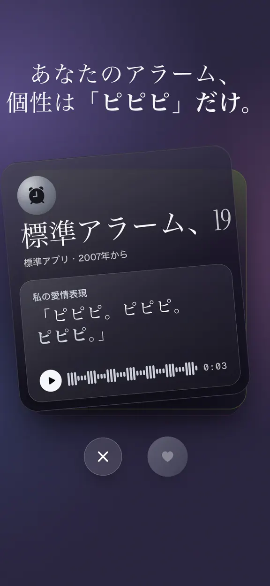
使い方
話しかけないと、止まらない。
ビープ音は聞き流せても、話しかけてくる声は聞き流しにくいもの。声に出して何かを言ったあとは、二度寝もしにくくなります。
- 23:40前の晩
起こしてくれる
キャラを選ぶ 鬼軍曹から魔王ネコまで、7人のキャラクター。声も冗談もそれぞれ違います。自分の声で録音することもできます。
- 7:05ラウンド 2 / 3
スヌーズすると、
手強くなる あと5分だけ眠れます。でも次は、もっと大きな声で、もっと容赦なく戻ってきます。
- 7:06起床
合言葉を
言えば止まる 今日の合言葉を声に出して言うと、アラームが止まります。隣で誰かが寝ているときは、入力でもOK。
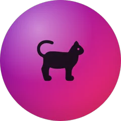
魔王ネコが
今すぐ言おう
「お許しを、
言葉を、唱えよ、人間。そして、皿へ。
スヌーズを押して、何が起きるか見てください。それから合言葉を入力して止めましょう。
7:01
一発で起床これがWakeBuddyです。朝7時に、本物で。
キャラクター
7つの声から、あなたの相棒を。
キャラクターごとに、声も冗談も合言葉も違います。セリフをタップして聞いてみてください。
-
魔王ネコ
ネコが朝ごはんを要求中。今すぐ。目的はただひとつ、エサ皿。傲慢な魔王ネコ。スヌーズすると、棚から物が落ち始める。
-
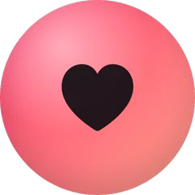
彼女
理想の彼女が、起こしてくれる。甘くて、ちょっと小悪魔。毎朝がラブコメみたい。
-
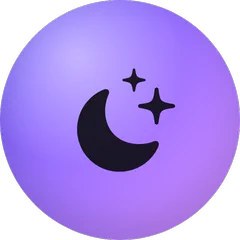
彼氏
理想の彼氏が、起こしてくれる。低い声、あたたかい心、朝ごはんはもうできてる。「おはよう」の言い方が、ずるい。
-
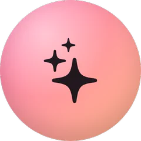
ラッキーガール
朝のラッキーガール習慣。やさしくて、かわいくて、ちょっぴり夢見がち。目覚めの合言葉をラッキーガールのアファメーションに変えて、声に出して言わせてくれる。
-
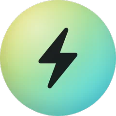
熱血コーチ
起きろ、夢を追いかけろ。朝から全力。大きな夢、大きな目標、そしてあなたを信じる声。
- 無料
鬼軍曹
あなた専属の鬼教官。声がでかい、厳しい、でも実はおもしろい。スヌーズすると、さらに声がでかくなる。
-
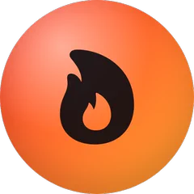
毒舌芸人
あなたの朝を、イジり倒す。スヌーズ、言い訳、「あと五分」をイジり倒す毒舌芸人。イジるのは習慣だけ、あなた自身ではありません。
-
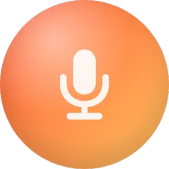
あなたの声
大切な人の声で起きる。自分の声で最大29秒まで録音できます。パートナーが自分のWakeBuddyで録音して、送ってくれることも。
あなたが録音あなたのセリフ
最大0:29
アプリの中
夜空から、朝焼けへ。
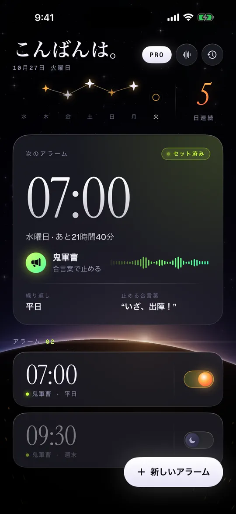
次のアラーム、起こしてくれるキャラ、言うべき合言葉。
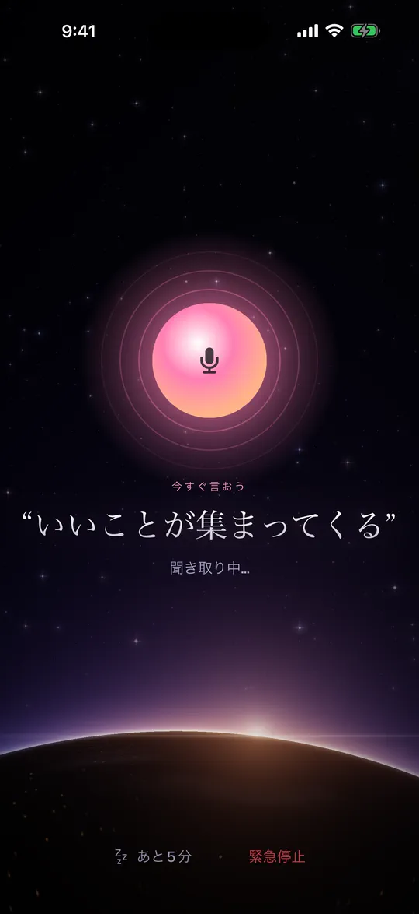
今すぐ言おう。スヌーズは5分だけ、キャラはもっと不機嫌に。
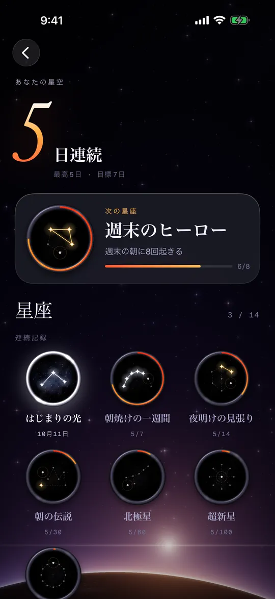
時間どおりに起きた朝が、ひとつずつ星になります。
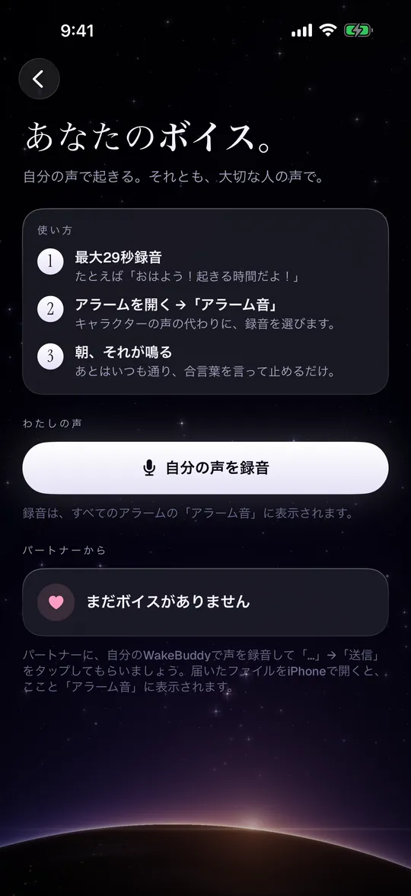
自分の声で録音。パートナーの声も受け取れます。
起きられない人のために
寝過ごしにくく、ズルもできない。
- 消音モード
本物のアラーム
として鳴る iPhoneのアラーム機能を使うので、消音モードや集中モードでも、時計アプリと同じように鳴ります。
- 音量ボタン
こっそり
止めても無駄 音量ボタンで黙らせても、1分半後にまた鳴ります。
- ロック画面
ロック画面に
カウントダウン 次のアラームとスヌーズの残り時間を、ロック画面とウィジェットで確認できます。
- 話せないとき
話せないときは
入力で 隣で誰かが寝ていても大丈夫。合言葉は入力でもOK。緊急停止もあります。
- プライバシー
プライバシー重視
音声認識はiPhoneの中で行われます。あなたの声が録音されたり、送信されたりすることはありません。
- 言語
4つの言語
日本語、英語、スペイン語、ドイツ語。声も合言葉も冗談も、それぞれの言語で。
連続記録と星座
時間どおりの朝が、星になる。
時間どおりに起きるたびに、星がひとつ灯ります。続けるうちに星は星座になり、「朝焼けの一週間」から「太陽の一年」まで、14個のメダルが集まります。iPhoneを傾けると、メダルが光を反射します。自慢のメダルはシェアも。
- 朝焼けの
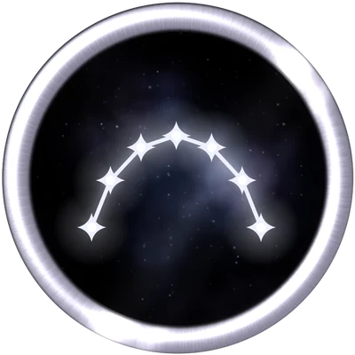
一週間 7日連続で起きる コモン - 夜明けの
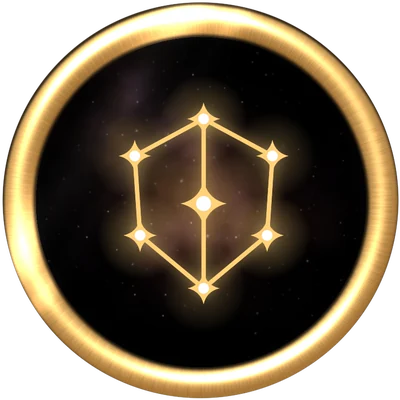
見張り 14日連続で起きる レア - 大合唱7人の
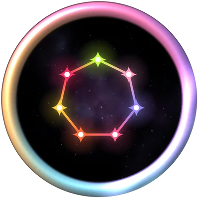
キャラクター レジェンド全員に 起こされる
料金
まずは無料で。気に入ったらプレミアム。
無料
起きるために必要なものは、ぜんぶ。
- 鬼軍曹のアラーム1件
- スヌーズのラウンドと合言葉
- ロック画面のカウントダウンとウィジェット
- 連続記録と星座
プレミアム
全キャラクターを、毎朝。
- 7人のキャラクターすべて＋新キャラ
- アラーム無制限
- 自分の声のアラーム
- 週間・年間（7日間無料トライアル付き）・買い切り
価格はApp Storeで、お住まいの国の通貨で表示されます。
よくある質問。
WakeBuddyとは？
WakeBuddyは、iPhoneのしゃべる目覚まし時計アプリです。着信音のかわりにキャラクターの声で起こし、スヌーズするたびに手強くなり、合言葉を声に出して言うまで止まりません。
消音モードや集中モードでも鳴りますか？
はい。iPhoneのアラーム機能（AlarmKit）を使うので、時計アプリと同じように消音モードや集中モードでも鳴ります。インストール後に一度アプリを開いて、アラームを許可してください。
声は録音されますか？
いいえ。アラームが鳴っている間だけ、合言葉を確認するために聞いています。音声認識はiPhoneの中で行われ、音声が録音・保存・送信されることはありません。
声を出せないときは？
合言葉を入力すれば止まります。どうしても必要なときは、緊急停止もあります。
スヌーズするとどうなりますか？
あと5分眠れます。そのあとキャラクターは、もっと大きな声で、もっと容赦なく戻ってきます。ラウンドを重ねるほど手強くなります。
対応している言語は？
日本語、英語、スペイン語、ドイツ語です。キャラクターのセリフ、合言葉、冗談は、言語ごとに書かれ、声も収録されています。
料金は？
鬼軍曹のアラーム1件なら無料です。プレミアムでは、全キャラクター、無制限のアラーム、自分の声のアラームが使えます。週間・年間（7日間無料トライアル付き）・買い切りのプランがあります。
対応機種は？
iOS 26以降を搭載したiPhoneです。
ほかの「起きられない人向け」アラームとの違いは？
多くのアラームは、計算問題やバーコードの読み取りで止める仕組みです。WakeBuddyは「話す」ことで止めます。思わず返事をしたくなるキャラクターと、声に出す合言葉。罰ではなく、笑える朝を目指しています。
解決しない場合は nikitachirkun@gmail.com までご連絡いただくか、サポートページをご覧ください（英語）。
アラームが、ついにしゃべり出す。
iPhone向け · App Storeで無料